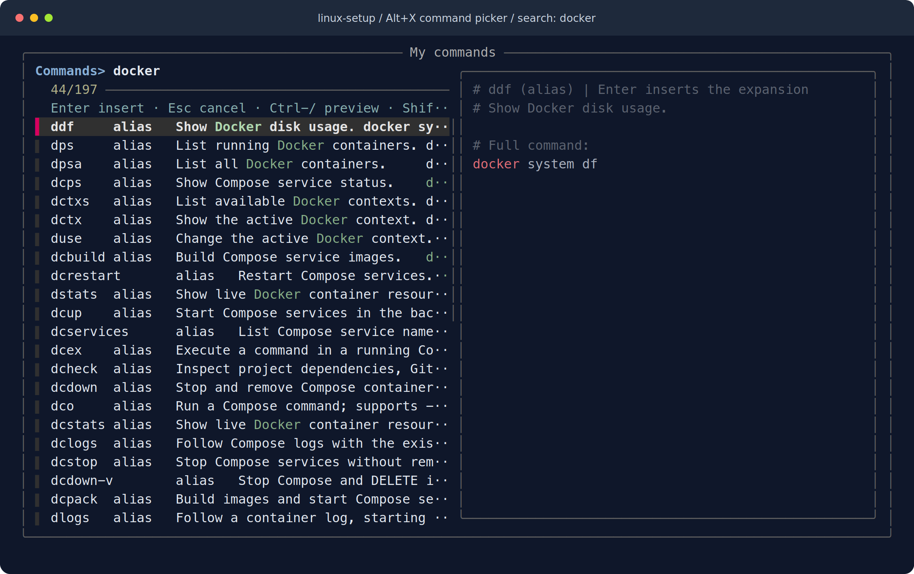
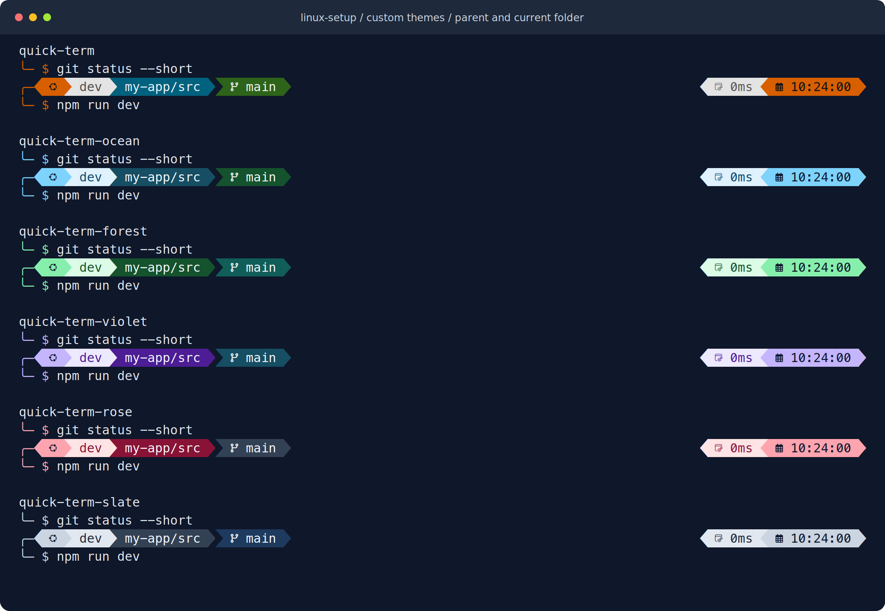

A configured shell
Use Zsh with completions and an Oh My Posh prompt, or switch between Zsh and Bash.
Fonts and shellZsh, tmux, Oh My Posh, and the tools you reach for every day. Set them up once, then get to work.
devhelp pnpm
TERMINAL PREVIEWS
See what finding a command, changing your prompt, or switching GitHub accounts looks like.
Alt + X
Search by shortcut or description. Enter inserts the full command into your prompt so you can review or edit it before running it.
Command reference
theme
Choose from Oh My Posh themes with different layouts for Git, working directories, and command timing.
Theme guide
github
Switch the active GitHub CLI account and set the commit author for your current repository.
GitHub account guide github list
github use dev-work
INCLUDED TOOLS
Use Zsh with completions and an Oh My Posh prompt, or switch between Zsh and Bash.
Fonts and shellFind project shortcuts with fzf, start a named tmux session, or inspect which process is using a port.
Terminal workflowCheck a checkout before running it, set up browser testing, and manage PostgreSQL databases from the terminal.
Developer workflowReview tools and optional agent integrations before applying your plan. Setup backs up configuration it replaces.
Setup wizardQUICK START
Use Ubuntu or Debian, including inside WSL. Run the installer as your normal user and keep the checkout so your configuration links stay in place.
Full installation guidesudo apt update && sudo apt upgrade
sudo apt install --no-install-recommends git curl ca-certificates python3git clone https://github.com/1hubengineering/linux-setup.git ~/linux-setup
cd ~/linux-setup
./install.sh --preflight && ./install.sh --dry-run && ./install.shexport PATH="$HOME/.local/bin:$PATH"
exec zshAfter Zsh starts, run doctor to check your tools and shell integrations.
USER GUIDES
Find the tools, commands, and recovery steps you need as your setup changes.
Browse all guides